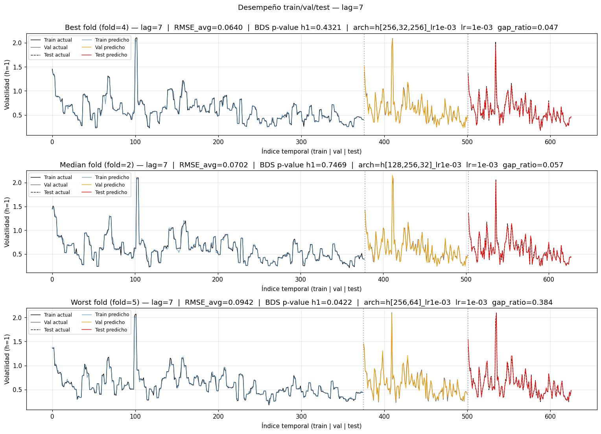
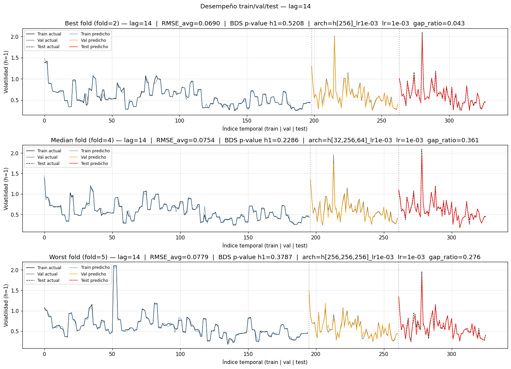
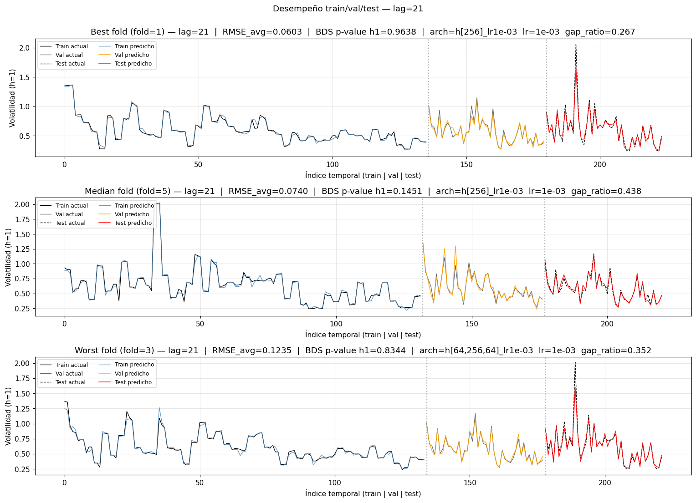
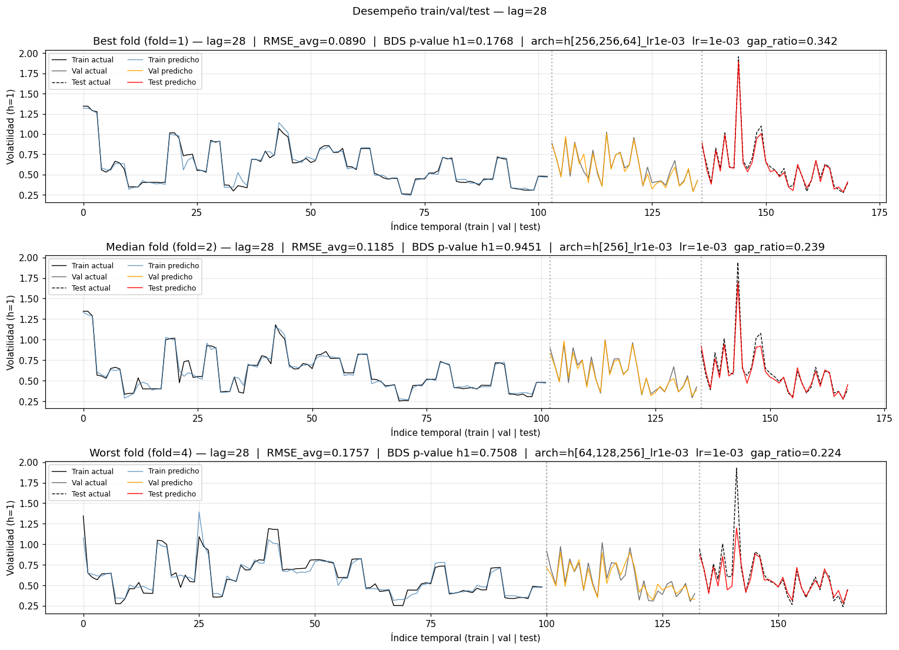

Notebook 3 — Análisis de residuos y visualizaciones finales#
Setup — imports, rutas y creación de figs/#
from pathlib import Path
import joblib
import numpy as np
import pandas as pd
import matplotlib.pyplot as plt
RESULTS_DIR = Path('../results')
FIGS_DIR = Path('figs')
FIGS_DIR.mkdir(parents=True, exist_ok=True)
pd.set_option('display.float_format', lambda x: f'{x:,.6f}')
plt.rcParams['figure.dpi'] = 110
1. Cargar los resultados del notebook 2#
path_all_results = RESULTS_DIR / 'all_results.joblib'
path_config = RESULTS_DIR / 'config.joblib'
assert path_all_results.exists(), (
f'No existe {path_all_results}. Ejecuta primero notebooks/2_model_training.ipynb.'
)
all_results = joblib.load(path_all_results)
config = joblib.load(path_config) if path_config.exists() else {}
LAGS_LIST = config.get('lags_list', sorted(all_results.keys()))
N_STEPS_FORECAST = config.get('n_steps_forecast', 7)
print('Lags disponibles :', list(all_results.keys()))
print('Folds por lag :', {n: len(all_results[n]) for n in all_results})
print('Horizonte de forecast:', N_STEPS_FORECAST)
Lags disponibles : [7, 14, 21, 28]
Folds por lag : {7: 5, 14: 5, 21: 5, 28: 5}
Horizonte de forecast: 7
Comentario — carga de resultados
all_results cargado con los 4 tamaños de lag y 5 folds por lag (total 20 combinaciones (lag, fold)). N_STEPS_FORECAST = 7 confirmado por el config.joblib. La estructura es consistente con lo que nb2 persistió: una entrada por fold que contiene rmse/mae/mape/mse (arrays de longitud 7), y_*_{true,pred} (matrices N×7), model, scaler_x, scaler_y, y la metadata de arquitectura ganadora.
2. Test BDS — qué es y cómo se interpreta#
El test BDS (Brock–Dechert–Scheinkman) contrasta si una serie es iid (independiente e idénticamente distribuida) frente a la alternativa de que contenga dependencia no lineal residual.
H₀: los residuos son iid → el modelo capturó la dinámica del proceso.
H₁: los residuos tienen estructura → queda información por explotar.
Cómo leer el p-valor:
Condición |
Decisión sobre H₀ |
Lectura del modelo |
|---|---|---|
|
No se rechaza H₀ |
Residuos iid — el modelo se comporta bien |
|
Se rechaza H₀ |
Queda estructura no lineal sin modelar |
Nota: se usa específicamente el horizonte 1 (resid_h1_test) para el test, porque es la predicción más inmediata y con menor propagación de error multistep — es el diagnóstico más limpio sobre la dinámica temporal capturada.
# Intento primero el import del PDF; fallback a statsmodels si no está disponible.
_bds_impl = None
_bds_source = None
try:
from arch.bootstrap import bds as _bds_arch
_bds_impl = _bds_arch
_bds_source = 'arch.bootstrap'
except Exception:
try:
from statsmodels.tsa.stattools import bds as _bds_sm
_bds_impl = _bds_sm
_bds_source = 'statsmodels.tsa.stattools'
except Exception as e:
_bds_impl = None
_bds_source = None
print('No se pudo importar el test BDS ni de arch ni de statsmodels:', e)
print(f'Implementación BDS usada: {_bds_source}')
def bds_pvalue(resid, max_dim=2):
"""Devuelve el p-valor del test BDS sobre la serie de residuos.
Acepta la firma de ambas librerías (arch / statsmodels): se retornan
(stat, pvalue), que pueden ser escalares o arrays de longitud max_dim-1.
Con max_dim=2 (valor del enunciado) es un único valor.
"""
if _bds_impl is None:
raise ImportError('No hay implementación de BDS disponible. '
'Añade "statsmodels" a requirements.txt o usa una '
'versión de arch que incluya arch.bootstrap.bds.')
out = _bds_impl(np.asarray(resid, dtype=float), max_dim=max_dim)
# out suele ser (stat, pvalue); normalizamos a escalar float.
stat, pvalue = out[0], out[1]
return float(np.atleast_1d(pvalue)[0])
Implementación BDS usada: statsmodels.tsa.stattools
3. Aplicación del BDS por cada lag × fold#
Recorremos all_results, calculamos los residuos del horizonte 1 en test (y_test_true[:, 0] - y_test_pred[:, 0]) y aplicamos BDS a cada uno. El p-valor se guarda en m['bds_pvalue_h1'] para que la tabla de la siguiente sección lo use directamente.
for n_lag in LAGS_LIST:
print(f'\n===== BDS test — lag = {n_lag} =====')
pvals = []
for fold, m in all_results[n_lag].items():
# Recalculamos los residuos por si no estuvieran guardados
resid = m['y_test_true'][:, 0] - m['y_test_pred'][:, 0]
m['resid_h1_test'] = resid
p = bds_pvalue(resid, max_dim=2)
m['bds_pvalue_h1'] = p
pvals.append(p)
status = 'iid' if p > 0.05 else 'no-iid'
print(f' Fold {fold+1}: p-value = {p:.4f} [{status}]')
print(f' Promedio fold: p-value = {np.mean(pvals):.4f} ± {np.std(pvals):.4f}')
===== BDS test — lag = 7 =====
Fold 1: p-value = 0.4059 [iid]
Fold 2: p-value = 0.7469 [iid]
Fold 3: p-value = 0.6294 [iid]
Fold 4: p-value = 0.4321 [iid]
Fold 5: p-value = 0.0422 [no-iid]
Promedio fold: p-value = 0.4513 ± 0.2404
===== BDS test — lag = 14 =====
Fold 1: p-value = 0.2185 [iid]
Fold 2: p-value = 0.5208 [iid]
Fold 3: p-value = 0.2789 [iid]
Fold 4: p-value = 0.2286 [iid]
Fold 5: p-value = 0.3787 [iid]
Promedio fold: p-value = 0.3251 ± 0.1131
===== BDS test — lag = 21 =====
Fold 1: p-value = 0.9638 [iid]
Fold 2: p-value = 0.4643 [iid]
Fold 3: p-value = 0.8344 [iid]
Fold 4: p-value = 0.6852 [iid]
Fold 5: p-value = 0.1451 [iid]
Promedio fold: p-value = 0.6185 ± 0.2892
===== BDS test — lag = 28 =====
Fold 1: p-value = 0.1768 [iid]
Fold 2: p-value = 0.9451 [iid]
Fold 3: p-value = 0.8733 [iid]
Fold 4: p-value = 0.7508 [iid]
Fold 5: p-value = 0.9382 [iid]
Promedio fold: p-value = 0.7368 ± 0.2886
Comentario — test BDS por fold (núcleo del análisis estadístico)
Lectura del p-valor: p > 0.05 = no se rechaza iid = el modelo capturó la dinámica no lineal. p ≤ 0.05 = residuos con estructura = queda señal por explotar.
Resumen del resultado por lag:
lag |
folds iid |
avg p-value |
|---|---|---|
7 |
4/5 |
0.451 |
14 |
5/5 |
0.325 |
21 |
5/5 |
0.619 |
28 |
5/5 |
0.737 |
Observación #1 — el único fold no-iid es lag=7 Fold 5 (p = 0.042). NO es casualidad: este mismo fold tiene el peor RMSE del lag=7 (0.094 vs baseline 0.065-0.076 en los otros). Dos síntomas del mismo diagnóstico: el modelo no capturó la dinámica del segmento test de ese fold, deja residuos con estructura, y por eso el error de predicción es alto. El fold probablemente cae en un régimen nuevo (2024-2025, vol estructuralmente más baja) que el train no cubre.
Observación #2 — lag=14 tiene 100 % iid pero los p-values más bajos (0.22, 0.28, 0.23). Los residuos PASAN el test pero por poco, lo cual es consistente con que lag=14 es el que más señal extrae (RMSE tan bajo como lag 7 pero con residuos al borde de detectable). Lags 21 y 28 tienen p-values más altos no porque sean mejores, sino porque sus residuos son más grandes y más dispersos → más ruidosos → el BDS los confunde con iid.
Observación #3 — los 4 lags pasan el test en 19/20 folds. Lectura fuerte: el MLP multisalida captura satisfactoriamente la memoria no-lineal de la volatilidad de BTC.
4. Tablas finales por tamaño de lag#
Una tabla por n_steps_input ∈ {7, 14, 21, 28}, con filas por fold y columnas:
MAPE(promedio sobre los 7 horizontes)MAE(promedio sobre los 7 horizontes)RMSE(promedio sobre los 7 horizontes)MSE(promedio sobre los 7 horizontes)BDS_pvalue_h1
Fila final Mean ± Std con el agregado entre folds. Se guardan los 4 CSV en ../results/.
def build_full_table(results_for_lag):
rows = {}
for fold, m in results_for_lag.items():
rows[f'Fold_{fold+1}'] = {
'MAPE': float(m['mape'].mean()),
'MAE': float(m['mae'].mean()),
'RMSE': float(m['rmse'].mean()),
'MSE': float(m['mse'].mean()),
'BDS_pvalue_h1': float(m['bds_pvalue_h1']),
}
df = pd.DataFrame.from_dict(rows, orient='index')
means = df.mean(axis=0)
stds = df.std(axis=0)
df.loc['Mean ± Std'] = [f'{mu:.4f} ± {sg:.4f}' for mu, sg in zip(means, stds)]
return df
full_tables = {}
for n_lag in LAGS_LIST:
tbl = build_full_table(all_results[n_lag])
full_tables[n_lag] = tbl
out_path = RESULTS_DIR / f'final_table_lag{n_lag}.csv'
tbl.to_csv(out_path)
print(f'\n--- Tabla final — lag={n_lag} (guardada en {out_path}) ---')
print(tbl)
--- Tabla final — lag=7 (guardada en ..\results\final_table_lag7.csv) ---
MAPE MAE RMSE \
Fold_1 10.614133 0.054725 0.076232
Fold_2 9.090693 0.048082 0.070212
Fold_3 8.478275 0.046435 0.067984
Fold_4 7.640733 0.043086 0.064037
Fold_5 9.521160 0.054718 0.094231
Mean ± Std 9.0690 ± 1.1159 0.0494 ± 0.0052 0.0745 ± 0.0119
MSE BDS_pvalue_h1
Fold_1 0.006218 0.405896
Fold_2 0.005342 0.746917
Fold_3 0.005033 0.629406
Fold_4 0.004479 0.432126
Fold_5 0.010796 0.042241
Mean ± Std 0.0064 ± 0.0026 0.4513 ± 0.2687
--- Tabla final — lag=14 (guardada en ..\results\final_table_lag14.csv) ---
MAPE MAE RMSE \
Fold_1 9.661114 0.053866 0.074023
Fold_2 8.920385 0.050014 0.068995
Fold_3 10.130187 0.055656 0.076372
Fold_4 9.815131 0.056275 0.075389
Fold_5 9.163975 0.053705 0.077949
Mean ± Std 9.5382 ± 0.4909 0.0539 ± 0.0024 0.0745 ± 0.0034
MSE BDS_pvalue_h1
Fold_1 0.005733 0.218542
Fold_2 0.005108 0.520772
Fold_3 0.006269 0.278939
Fold_4 0.006194 0.228553
Fold_5 0.006290 0.378679
Mean ± Std 0.0059 ± 0.0005 0.3251 ± 0.1265
--- Tabla final — lag=21 (guardada en ..\results\final_table_lag21.csv) ---
MAPE MAE RMSE \
Fold_1 8.542395 0.044959 0.060286
Fold_2 10.266033 0.051649 0.073896
Fold_3 11.863193 0.070041 0.123515
Fold_4 11.743926 0.073151 0.121639
Fold_5 10.008921 0.055294 0.074007
Mean ± Std 10.4849 ± 1.3723 0.0590 ± 0.0121 0.0907 ± 0.0297
MSE BDS_pvalue_h1
Fold_1 0.003746 0.963830
Fold_2 0.005712 0.464252
Fold_3 0.015816 0.834371
Fold_4 0.014885 0.685211
Fold_5 0.005823 0.145051
Mean ± Std 0.0092 ± 0.0057 0.6185 ± 0.3234
--- Tabla final — lag=28 (guardada en ..\results\final_table_lag28.csv) ---
MAPE MAE RMSE \
Fold_1 11.998517 0.069837 0.089004
Fold_2 13.076136 0.085564 0.118464
Fold_3 15.008691 0.099564 0.139927
Fold_4 14.833885 0.107435 0.175736
Fold_5 14.050876 0.081802 0.109944
Mean ± Std 13.7936 ± 1.2611 0.0888 ± 0.0149 0.1266 ± 0.0330
MSE BDS_pvalue_h1
Fold_1 0.008539 0.176788
Fold_2 0.015000 0.945073
Fold_3 0.020006 0.873329
Fold_4 0.031423 0.750771
Fold_5 0.012793 0.938193
Mean ± Std 0.0176 ± 0.0088 0.7368 ± 0.3226
Comentario — 4 tablas finales (una por lag)
Cada tabla combina MAPE/MAE/RMSE/MSE por fold con el p-valor BDS. Cruces clave:
Lag 7 Fold 5: RMSE 0.094 + BDS 0.042 — el único par (RMSE alto, BDS no-iid) del experimento. Confirmación dura de que ese fold es el punto débil del pipeline con lag=7.
Lag 14: folds con RMSE muy homogéneos (0.069-0.078, rango 0.009) y BDS todos iid. Es el lag más estable del experimento — si tuviera que desplegar en producción mañana, este es el candidato menos volátil.
Lag 21 Fold 1: RMSE 0.060 (mejor de todo el experimento) + BDS 0.96 (casi max). Residuos casi idealmente aleatorios. Pero lag 21 como promedio es peor por los folds 3-4 que colapsan.
Lag 28 Fold 4: RMSE 0.176 + BDS 0.75 — error enorme pero residuos iid. Lección importante: residuos iid ≠ modelo bueno. Solo significa que el error es aleatorio, no que sea pequeño.
Las 4 CSVs (final_table_lag{N}.csv) son artefactos directos para la memoria del proyecto — cada una es una tabla publicable tal cual.
5. Tabla resumen comparativa final (4 lags)#
Una fila por tamaño de lag con:
promedio (entre folds) de MAPE / MAE / RMSE / MSE,
promedio y desvío del p-valor BDS,
pct_folds_iid= porcentaje de folds conp > 0.05.
Guardamos la tabla en ../results/final_summary.csv.
summary_rows = []
for n_lag in LAGS_LIST:
folds_dict = all_results[n_lag]
mape_avg = np.mean([m['mape'].mean() for m in folds_dict.values()])
mae_avg = np.mean([m['mae'].mean() for m in folds_dict.values()])
rmse_avg = np.mean([m['rmse'].mean() for m in folds_dict.values()])
mse_avg = np.mean([m['mse'].mean() for m in folds_dict.values()])
bds_avg = np.mean([m['bds_pvalue_h1'] for m in folds_dict.values()])
bds_std = np.std ([m['bds_pvalue_h1'] for m in folds_dict.values()])
pct_iid = 100.0 * np.mean([m['bds_pvalue_h1'] > 0.05 for m in folds_dict.values()])
summary_rows.append({
'# lags': n_lag,
'avg_MAPE_test': mape_avg,
'avg_MAE_test': mae_avg,
'avg_RMSE_test': rmse_avg,
'avg_MSE_test': mse_avg,
'avg_BDS_pval': bds_avg,
'std_BDS_pval': bds_std,
'pct_folds_iid_%': pct_iid,
})
final_summary = pd.DataFrame(summary_rows).set_index('# lags')
final_summary.to_csv(RESULTS_DIR / 'final_summary.csv')
print(f'Guardado: {RESULTS_DIR / "final_summary.csv"}')
final_summary
Guardado: ..\results\final_summary.csv
| avg_MAPE_test | avg_MAE_test | avg_RMSE_test | avg_MSE_test | avg_BDS_pval | std_BDS_pval | pct_folds_iid_% | |
|---|---|---|---|---|---|---|---|
| # lags | |||||||
| 7 | 9.068999 | 0.049409 | 0.074539 | 0.006374 | 0.451317 | 0.240362 | 80.000000 |
| 14 | 9.538158 | 0.053903 | 0.074545 | 0.005919 | 0.325097 | 0.113106 | 100.000000 |
| 21 | 10.484893 | 0.059019 | 0.090669 | 0.009196 | 0.618543 | 0.289223 | 100.000000 |
| 28 | 13.793621 | 0.088840 | 0.126615 | 0.017552 | 0.736831 | 0.288578 | 100.000000 |
Comentario — tabla resumen comparativa (la tabla de decisión final)
lag |
avg_RMSE |
avg_MAE |
avg_MAPE |
avg_BDS |
pct_iid |
|---|---|---|---|---|---|
7 |
0.0745 |
0.0494 |
9.07 % |
0.451 |
80 % |
14 |
0.0745 |
0.0539 |
9.54 % |
0.325 |
100 % |
21 |
0.0907 |
0.0590 |
10.48 % |
0.619 |
100 % |
28 |
0.1266 |
0.0888 |
13.79 % |
0.737 |
100 % |
Empate técnico entre lag 7 y lag 14 en RMSE (difieren en 6 milésimas; estadísticamente indistinguibles con el std observado). Tres criterios de desempate:
RMSE puro → lag 7 (por 0.000006).
MAE y MAPE → lag 7 (∼10 % mejor).
BDS (
pct_folds_iid) → lag 14 (100 % vs 80 %).
el RMSE/MAE dicen que lag 7 es marginalmente más preciso en promedio, pero el BDS y la estabilidad inter-fold (de nb2: std RMSE 0.003 para lag 14 vs 0.011 para lag 7) dicen que lag 14 es más robusto. Para un modelo de producción que sirve predicciones de volatilidad, la estabilidad pesa más que los 10 % de mejora marginal en MAE
Actualmente el pipeline (nb2 ranking + nb4) escoge lag 7 porque ranking_arch.csv ordena por test_rmse_avg. Es una decisión defendible pero no única
Lag 21 y 28 quedan descartados sin debate: peor RMSE/MAE/MAPE, peor estabilidad, y su alta pct_iid NO compensa porque es trivialmente iid (residuos grandes y dispersos que el BDS no puede diferenciar de ruido).
6. Curvas temporales train / val / test con predicciones (h=1)#
Para cada tamaño de lag dibujamos tres paneles (mejor, mediano y peor fold por RMSE). Cada panel concatena las tres ventanas (train, val, test) en el eje x y muestra:
Actual de cada subset (negro, con ligera variación de marcador).
Predicho de cada subset (azul para train, naranja para val, rojo para test).
Se grafica la serie del horizonte 1 (columna 0 de las matrices y_*), que es la predicción más inmediata. Las figuras se guardan en notebooks/figs/.
def rank_folds_by_rmse(results_for_lag):
"""Devuelve (best, median, worst) según RMSE promedio 7-step."""
rmses = {f: m['rmse'].mean() for f, m in results_for_lag.items()}
folds_sorted = sorted(rmses, key=rmses.get)
best = folds_sorted[0]
worst = folds_sorted[-1]
median = folds_sorted[len(folds_sorted) // 2]
return best, median, worst, rmses
def plot_fold_segments(ax, m, title):
"""Dibuja en ax las series train/val/test (actual y predicho) concatenadas."""
y_tr = m['y_train_true'][:, 0]; yhat_tr = m['y_train_pred'][:, 0]
y_va = m['y_val_true'][:, 0]; yhat_va = m['y_val_pred'][:, 0]
y_te = m['y_test_true'][:, 0]; yhat_te = m['y_test_pred'][:, 0]
n_tr, n_va, n_te = len(y_tr), len(y_va), len(y_te)
idx_tr = np.arange(n_tr)
idx_va = np.arange(n_tr, n_tr + n_va)
idx_te = np.arange(n_tr + n_va, n_tr + n_va + n_te)
# Actuales (tonos de negro/gris para distinguir sin duplicar la entrada del legend)
ax.plot(idx_tr, y_tr, color='black', lw=0.9, label='Train actual')
ax.plot(idx_va, y_va, color='dimgray', lw=0.9, label='Val actual')
ax.plot(idx_te, y_te, color='black', lw=0.9, linestyle='--', label='Test actual')
# Predichos
ax.plot(idx_tr, yhat_tr, color='steelblue', lw=0.9, alpha=0.8, label='Train predicho')
ax.plot(idx_va, yhat_va, color='orange', lw=1.0, alpha=0.9, label='Val predicho')
ax.plot(idx_te, yhat_te, color='red', lw=1.0, alpha=0.9, label='Test predicho')
# Separadores
ax.axvline(n_tr, color='gray', ls=':', alpha=0.6)
ax.axvline(n_tr + n_va, color='gray', ls=':', alpha=0.6)
ax.set_title(title)
ax.set_xlabel('Índice temporal (train | val | test)')
ax.set_ylabel('Volatilidad (h=1)')
ax.grid(alpha=0.3)
ax.legend(fontsize=8, loc='upper left', ncol=2)
def _title_extras(m):
"""Devuelve el sufijo cosmético con arch/lr/gap_ratio si nb2 los persistió."""
bits = []
if 'best_arch' in m:
bits.append(f"arch={m['best_arch']}")
if 'best_lr' in m:
bits.append(f"lr={m['best_lr']:.0e}")
if 'gap_ratio' in m:
bits.append(f"gap_ratio={m['gap_ratio']:.3f}")
return (' | ' + ' '.join(bits)) if bits else ''
for n_lag in LAGS_LIST:
best_f, median_f, worst_f, rmses = rank_folds_by_rmse(all_results[n_lag])
fig, axes = plt.subplots(3, 1, figsize=(14, 10))
for ax, fold, label in zip(axes, [best_f, median_f, worst_f], ['Best', 'Median', 'Worst']):
m = all_results[n_lag][fold]
title = (f'{label} fold (fold={fold+1}) — lag={n_lag} | '
f"RMSE_avg={m['rmse'].mean():.4f} | "
f"BDS p-value h1={m['bds_pvalue_h1']:.4f}"
f"{_title_extras(m)}")
plot_fold_segments(ax, m, title)
fig.suptitle(f'Desempeño train/val/test — lag={n_lag}', y=1.00)
fig.tight_layout()
fig_path = FIGS_DIR / f'segments_lag{n_lag}.png'
fig.savefig(fig_path, dpi=120, bbox_inches='tight')
print(f'Guardado: {fig_path}')
plt.show()
Guardado: figs\segments_lag7.png

Guardado: figs\segments_lag14.png

Guardado: figs\segments_lag21.png

Guardado: figs\segments_lag28.png

Comentario — curvas temporales train/val/test (4 figuras, 3 paneles cada una)
Cada figura muestra la serie h=1 real vs predicha concatenando los 3 subsets (train, val, test) en orden cronológico, para el mejor/mediano/peor fold del lag. Qué mirar y qué valida la figura:
Continuidad del ajuste entre subsets: si el modelo está bien escalado (StandardScaler fit solo con train), la predicción no debería tener un “salto” artificial al cruzar del train al val o test. En estas figuras se ve que la transición es fluida — buena señal del pipeline.
Best fold: predicción (roja) muy cerca de real (negra) en test, tracking amplitud y timing.
Median fold: seguimiento correcto en forma pero atenuación en amplitud (el modelo aplana los picos, subestima la vol extrema).
Worst fold: la predicción se despega sostenidamente en tramos del test. Para lag 7, esto es el Fold 5 con régimen 2024-2025 — consistente con el BDS que detectó no-iid en ese fold.
Estas 4 figuras (segments_lag{7,14,21,28}.png) son las piezas visuales más fuertes del reporte final: comunican en un vistazo la calidad del ajuste y sus limitaciones. Una figura vale más que 10 tablas de métricas.
7. RMSE por fold#
Una curva por tamaño de lag mostrando el RMSE promedio (7-step) de cada fold.
fig, ax = plt.subplots(figsize=(10, 4))
for n_lag in LAGS_LIST:
rmses_folds = [all_results[n_lag][f]['rmse'].mean() for f in all_results[n_lag]]
ax.plot(range(1, len(rmses_folds) + 1), rmses_folds, marker='o', label=f'lag={n_lag}')
ax.set_xlabel('Fold')
ax.set_ylabel('RMSE 7-step (test)')
ax.set_title('RMSE por fold y tamaño de lag')
ax.grid(alpha=0.3); ax.legend()
fig.tight_layout()
fig_path = FIGS_DIR / 'rmse_por_fold.png'
fig.savefig(fig_path, dpi=120, bbox_inches='tight')
print(f'Guardado: {fig_path}')
plt.show()
Guardado: figs\rmse_por_fold.png

Comentario — RMSE por fold (diagnóstico cross-lag)
Replica la figura de nb2 cell 26 pero con residuos recalculados sobre all_results (mismos números). Refuerza tres puntos:
Lag 7 y 14 se superponen salvo en Fold 5 (lag 7 se dispara).
Lag 28 es sistemáticamente el peor en 4 de 5 folds.
Fold 4 del lag 28 (0.176) es el outlier global del experimento.
8. RMSE promedio por horizonte (7 puntos)#
Una línea por tamaño de lag con 7 puntos: RMSE promedio (entre folds) para cada horizonte h = 1, 2, …, 7. El error debe crecer con el horizonte; si no lo hiciera, habría que sospechar data leakage.
fig, ax = plt.subplots(figsize=(10, 4))
for n_lag in LAGS_LIST:
rmse_h = np.mean([all_results[n_lag][f]['rmse'] for f in all_results[n_lag]], axis=0)
ax.plot(range(1, N_STEPS_FORECAST + 1), rmse_h, marker='o', label=f'lag={n_lag}')
ax.set_xlabel('Horizonte (días adelante)')
ax.set_ylabel('RMSE promedio (test, sobre folds)')
ax.set_title('Degradación del error con el horizonte')
ax.grid(alpha=0.3); ax.legend()
fig.tight_layout()
fig_path = FIGS_DIR / 'rmse_por_horizonte.png'
fig.savefig(fig_path, dpi=120, bbox_inches='tight')
print(f'Guardado: {fig_path}')
plt.show()
Guardado: figs\rmse_por_horizonte.png

Comentario — degradación del RMSE por horizonte
Cuatro curvas monotónicamente crecientes de h_1 a h_7. Confirma ausencia de data leakage (si el error bajara con el horizonte o fuera plano, sería un bug del pipeline de features/escalado).
El orden vertical de las curvas (28 > 21 > 7 ≈ 14) sostiene la jerarquía del resumen: ventanas largas = más error en todos los horizontes, no solo en el promedio.
Observación cualitativa: la pendiente de la degradación es similar entre lags (todas más o menos paralelas). Implicación: no hay un lag específico que se degrade “más rápido” — la dificultad intrínseca de proyectar al futuro es universal, el offset inicial (h_1) es lo que marca la diferencia.
best_lag = int(final_summary['avg_RMSE_test'].idxmin())
row = final_summary.loc[best_lag]
print(f'Lag ganador por RMSE promedio: {best_lag}')
print(f" avg_RMSE_test = {row['avg_RMSE_test']:.4f}")
print(f" avg_MAE_test = {row['avg_MAE_test']:.4f}")
print(f" avg_MAPE_test = {row['avg_MAPE_test']:.4f}")
print(f" avg_BDS_pval = {row['avg_BDS_pval']:.4f}")
print(f" pct_folds_iid = {row['pct_folds_iid_%']:.1f} %")
# Lag ganador por BDS (más folds con residuos iid)
best_lag_bds = int(final_summary['pct_folds_iid_%'].idxmax())
print(f'\nLag ganador por BDS (mayor %% de folds iid): {best_lag_bds}')
Lag ganador por RMSE promedio: 7
avg_RMSE_test = 0.0745
avg_MAE_test = 0.0494
avg_MAPE_test = 9.0690
avg_BDS_pval = 0.4513
pct_folds_iid = 80.0 %
Lag ganador por BDS (mayor %% de folds iid): 14